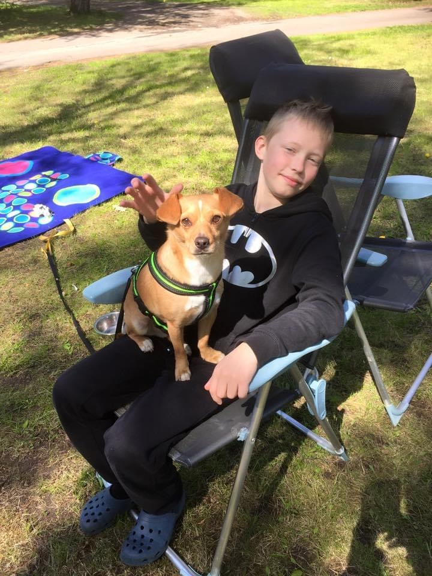

Hej, jag heter Ludvig Noriander och jag är 16 år gammal.
Just nu så går jag i gymnasiet och jag bor i en villa med min mamma, pappa, syster, hund och katt.
Jag gillar att spela piano.
Det är något som jag har gillat sedan jag var 14 då jag upptäckte det.
På pianot gillar jag att spela olika kända låtar och göra min egna improviserade version.
Jag gillar att skatea med min pennyboard och eftersom den har stora hjul så rullar den enkelt på lite sämre väglag.
Jag gillar inte att göra tricks eftersom jag känner ingen mening med det, det sliter på dina skor, du riskerar att trilla och slå dig.
För min del så är det mycket roligare att upptäcka nya ställen och cruisa runt.
Som nu precis när jag skriver det här så hittade jag ett nytt ställe i Helsingborg där det finns mycket bra asfalt och det var väldigt roligt att åka där.
Man får dessutom träning när man skatear och det fungerar utmärkt som transportation till bussen om man kommer lite sent.
Där hemma har jag det bra eftersom jag har en bra dator med mycket bra utrustning och allt detta har fått genom samla på mig det genom åren.